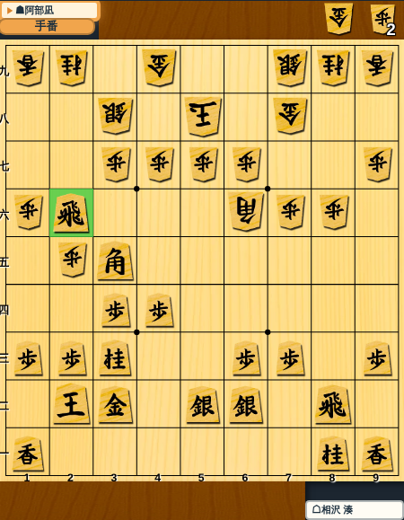

33章の段階B〜D。棋譜を1手ずつ動かせる盤・手の一覧・グラフ、分かれ目さがし、盤の上の手がかりと6つの崩れ方、答えのあとのAIの読み、好手をほめる、作戦負けの区間、弟子の棋譜帳。盤は観戦の本局の盤の写真（対局と同じ素材）で、印と矢印は上に重ねた見本。

棋譜を動かして、ここだと思う手で「ここが分かれ目」を押そう（2回まで）。
相手の取る手 AIの最善手
見抜いた！ うっかり（秒読み） 2四の歩をただで取られた。「安定」の稽古が狙い目（伸び×1.5）。秒読みだったので早指しの稽古も合う
AIの読み △3三角 ▲2四歩 △同角 ▲同飛 △2三歩
大きな悪手はないのに、駒組みのあいだに少しずつ形勢を損ねた。
「作戦」の稽古（棋譜並べ）が狙い目。得意な戦型で戦うと、序盤が楽になる
相手の銀の頭に歩を打って、形を崩した。ここで少しリードした。
ほめると、やる気が上がる（1局に1回）
うっかり 3方針の誤り 2寄せの誤り 1作戦負け 1
いちばん多いのは「うっかり」。安定の稽古が合いそう